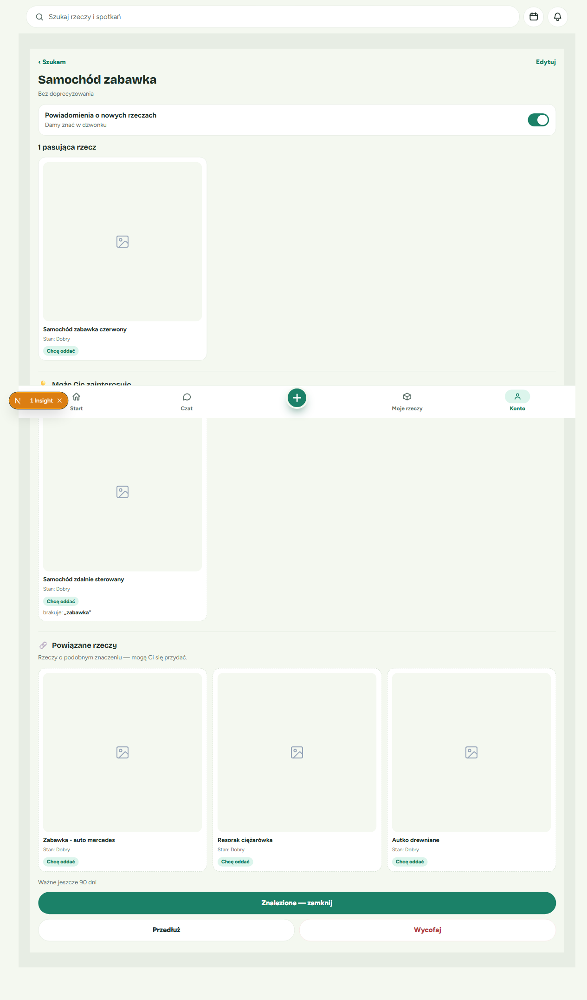
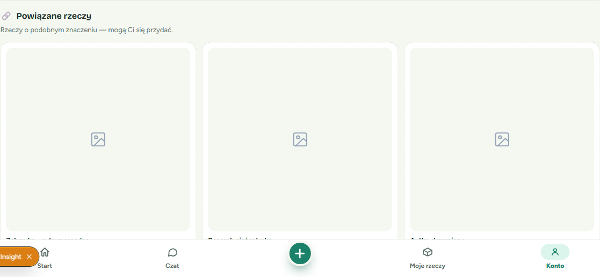
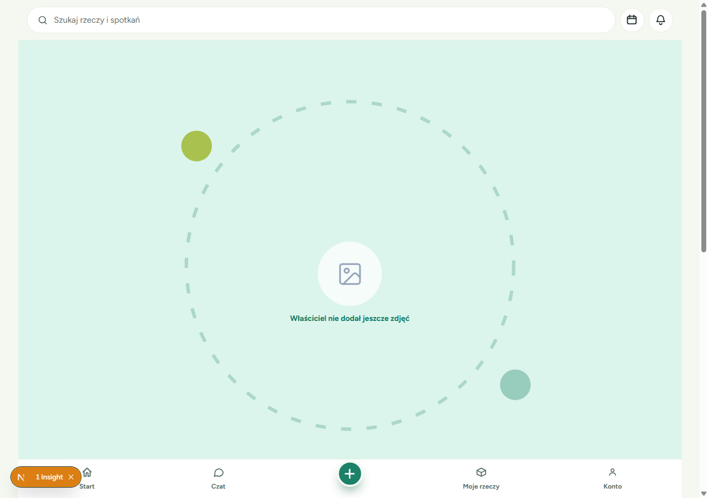
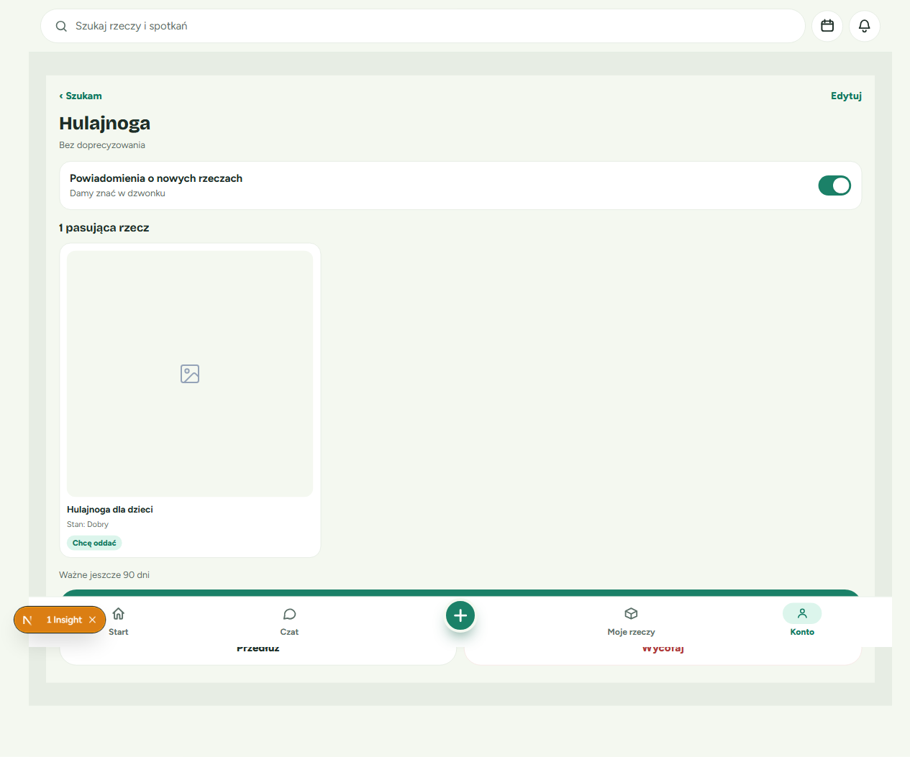
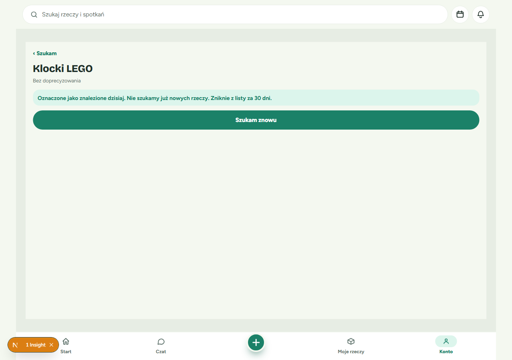
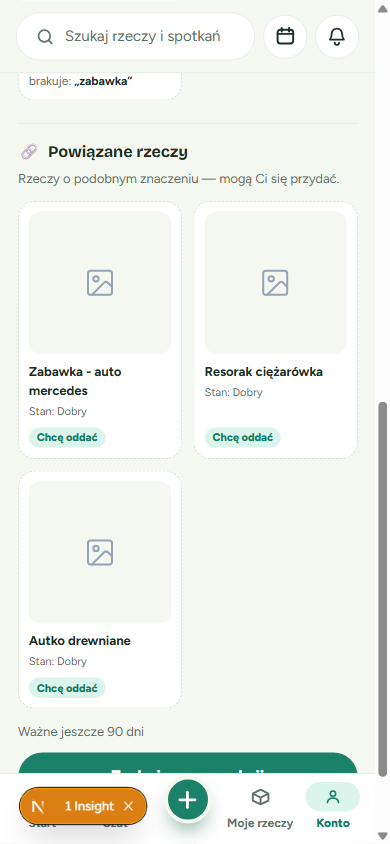

Test environment
| Base URL | http://localhost:15173 (isolated next dev --webpack from a scratchpad copy, BACKEND_INTERNAL_URL=http://localhost:18080) |
|---|---|
| Backend | uvicorn 127.0.0.1:18080, EMBEDDINGS_ENABLED=false, MODERATION_TEXT_ENABLED=false, started outside src/backend so its .env was not loaded |
| DB | e2e-similar-pg (pgvector/pgvector:0.8.7-pg18-trixie) :55432, migrated to 0101, removed afterwards |
| Browser / viewport | Playwright MCP Chromium · 1280×900 and 390×844 |
| Auth | seeker logged in through /login; another user and anonymous for the 404/401 checks |
| Data | API-seeded users, items and wants; want_matches and match_requested_at through SQL |
| User's stack | :5173 (PID 26000), :8080 (PID 20120), group-thing-app-postgres-1 and .env untouched |
Scenarios
4.1 Active want with MATCH, SUGGESTION and SIMILAR — ✅ Passed
User story 1; R21; screen:want-detail-active-similar
| # | Action | Expected | Actual | Status |
|---|---|---|---|---|
| 1 | Open /wanted/{id} at 1280×900 | active state | match grid, suggestions, related, actions | ✅ |
| 2 | DOM order | match → „Może Cię zainteresuje” → „Powiązane rzeczy” → actions | all three compareDocumentPosition checks true | ✅ |
| 3 | Section markup | SuggestionsSection classes, 🔗 h2, lead, grid-cols-2 sm:grid-cols-3 | mt-5.5 border-t border-line pt-4, lead „Rzeczy o podobnym znaczeniu — mogą Ci się przydać.”, grid grid-cols-2 gap-3 sm:grid-cols-3 | ✅ |
| 4 | Related cards | dashed, no „brakuje:”, no „nowe”, score order | 3 cards dashed, no footnote/marker, mercedes → resorak → autko | ✅ |
| 5 | MATCH card | solid | solid border-line | ✅ |


4.2 activeEmpty with only SIMILAR rows — ✅ Passed
R17, R20/R21; screen:want-detail-empty-similar
| # | Action | Expected | Actual | Status |
|---|---|---|---|---|
| 1 | Open /wanted/{id} | EmptyCard stays | „Jeszcze nic nie pasuje” present | ✅ |
| 2 | Order | section after EmptyCard | EmptyCard → „🔗 Powiązane rzeczy” | ✅ |
| 3 | Open /wanted | count 0 for this want | „Jeszcze nic · powiadomimy Cię”; „Samochód zabawka”: „1 pasująca rzecz” | ✅ |
| 4 | GET /api/wants | counts exclude SIMILAR | Wózek 0/0, Samochód 1/0, Fotelik 0/0 | ✅ |


4.3 Clicking a related card — ✅ Passed
R21 (reportOpened → markOpened); R17
| # | Action | Expected | Actual | Status |
|---|---|---|---|---|
| 1 | Click „Resorak ciężarówka” | item page opens | /{owner}/product/11623322-…, title „Resorak ciężarówka” | ✅ |
| 2 | Network | POST …/matches/{item}/opened | 204 No Content | ✅ |
| 3 | DB | opened_at set on SIMILAR row | tier=SIMILAR, opened_at set | ✅ |


4.4 Active want without SIMILAR rows — ✅ Passed
R21 (only when non-empty)
| # | Action | Expected | Actual | Status |
|---|---|---|---|---|
| 1 | Open „Hulajnoga” | no section | h2s: [„1 pasująca rzecz”], 0 sections | ✅ |


4.5 Closed (FULFILLED) want — ✅ Passed
User story 3; R20
| # | Action | Expected | Actual | Status |
|---|---|---|---|---|
| 1 | Open „Klocki LEGO” after close FULFILLED | no section | closed view + „Szukam znowu”, no section | ✅ |


4.6 GET /api/wants/{id}/similar contract — ✅ Passed
R16, R18
| # | Action | Expected | Actual | Status |
|---|---|---|---|---|
| 1 | GET as seeker | six fields | {id,title,href,meta,reserved_by_me,proposed_by_me}; meta {mode,condition,thumb_url,reserved,reserved_until} | ✅ |
| 2 | score/embedding/vector in body | absent | absent | ✅ |
| 3 | Order | score desc | 0.93 → 0.90 → 0.88 | ✅ |
| 4 | Other user | 404 | 404 „Nie znaleziono poszukiwania.” | ✅ |
| 5 | Unknown id | 404 | 404 | ✅ |
| 6 | Anonymous | 401 | 401 | ✅ |
| 7 | Want without SIMILAR | [] | [] | ✅ |
4.7 Responsive grid — ✅ Passed
component:similar-section
| # | Action | Expected | Actual | Status |
|---|---|---|---|---|
| 1 | 390×844 | 2 columns | 163.6px 163.6px / 171.2px 171.2px | ✅ |
| 2 | 1280×900 | 3 columns | 364px ×3 | ✅ |
| 3 | Overflow at 390 | none | none | ✅ |


4.8 Accessibility quick check — ✅ Passed
component:similar-section; accessibility.md
| # | Action | Expected | Actual | Status |
|---|---|---|---|---|
| 1 | aria-labelledby → h2 id | match | _r_3_ = _r_3_ | ✅ |
| 2 | getByRole region name „Powiązane rzeczy” (exact) | resolves | resolved | ✅ |
| 3 | Emoji span | aria-hidden | aria-hidden="true" | ✅ |
| 4 | Card links | named by title | 3 links named by title | ✅ |
4.9 Matching and matchingSlow with related items — ✅ Passed
R20; screen:want-detail-matching-similar
| # | Action | Expected | Actual | Status |
|---|---|---|---|---|
| 1 | Open „Fotelik samochodowy” (match_requested_at set) | status + skeletons, then section | „Szukamy pasujących rzeczy…”, 4 skeletons, „Powiązane rzeczy”, actions | ✅ |
| 2 | Wait > 60 s | matchingSlow keeps the section | „Odśwież teraz” + section present | ✅ |


Discrepancies
Critical, Major, Minor and Cosmetic: none observed.
Console & network
| Source | Message | Frequency | Severity | Impact |
|---|---|---|---|---|
GET /api/organizations/mine | 404 | 2 per load | minor | pre-existing, unrelated (the user has no organization) |
global-error.css | preload not used (warning) | once | cosmetic | dev server only |
Every /matches, /suggestions and /similar request returned 200. While a want is matching, GET /api/wants polls every 2 s for 60 s, which is the designed behaviour.
Spec alignment
- Fully implemented: R16, R17, R19/R20, R21; Visual Design (3 screens, 2 components)
- Partially / not implemented: none
- Extra behavior:
/similarserves stored rows for a FULFILLED want (UI hides them; same as/suggestions)
Variances: reserved captions not seeded; the frontend ran on webpack instead of Turbopack (the junction is outside the Turbopack root); tiers were seeded with SQL, so the matcher's assignment was not exercised live; match_requested_at was cleared with SQL for the non-matching wants.
Exit criteria
| Criterion | Status | Evidence |
|---|---|---|
| Order MATCH → „Może Cię zainteresuje” → „Powiązane rzeczy” → actions | ✅ | 4.1 |
| activeEmpty keeps EmptyCard, section follows, never counts | ✅ | 4.2 |
| matching: status + skeletons, then section | ✅ | 4.9 |
| section aria-labelledby, aria-hidden 🔗, lead, 2/3-col grid | ✅ | 4.1, 4.7, 4.8 |
| SimilarCard dashed, no footnote, never „nowe” | ✅ | 4.1 |
| Closed wants render no section | ✅ | 4.5 |
| Opening a card calls markOpened | ✅ | 4.3 |
| /similar 404 for a foreign want, no score/vector | ✅ | 4.6 |
| SIMILAR changes neither match_count nor new_match_count | ✅ | 4.2 |
Recommendations
- Must fix: none
- Should fix soon: none
- Nice-to-have: one live check of a reserved SIMILAR card on the next E2E pass
Artifacts: verification/screenshots/ (11 files) · visual-fidelity report
Conclusion
✅ GO. Every scenario in the brief passed with no discrepancies and no feature-related console errors. The section stays quiet: no counts, and not shown on closed wants. Next step: merge from the UI side, and gate the web deploy on the labelled-sample release gate.